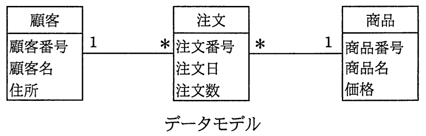
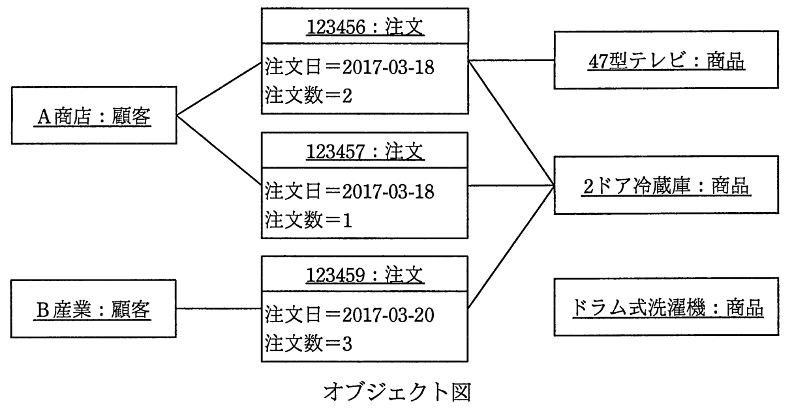

データモデルを解釈してオブジェクト図を作成した。解釈の誤りを適切に指摘した記述はどれか。ここで，モデルの表記にはUMLを用い，オブジェクト図の一部の属性の表示は省略した。


ア “
123456：注文”が複数の商品にリンクしているのは，誤りである。
イ “
2ドア冷蔵庫：商品”が複数の注文にリンクしているのは，誤りである。
ウ “
A商店：顧客”が複数の注文にリンクしているのは，誤りである。
エ “
ドラム式洗濯機：商品”がどの注文にもリンクしていないのは，誤りである。